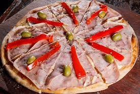
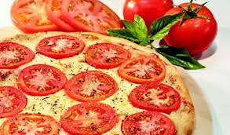

La pizza de mozzarella es la más clásica entre todas las recetas de pizzas. Es la que nos gusta a la mayoría. Es una receta compuesta por una masa baja y crocante con una cubierta de salsa de tomate, mozzarella, aceitunas y orégano

La pizza con jamon y morron es una de las más clásicas entre todas las recetas de pizzas. Es la que nos gusta a la mayoría. Es una receta compuesta por una masa baja y crocante con una cubierta de salsa de tomate, mozzarella, jamon, tiras de morron, aceitunas y orégano

La pizza Napolitana es un tipo de pizza que se originó en la ciudad de Nápoles, Italia. Este tipo de pizza se suele preparar con ingredientes simples y frescos. Una masa básica, salsa de tomate natural, queso mozzarella, albahaca fresca y aceite de oliva.